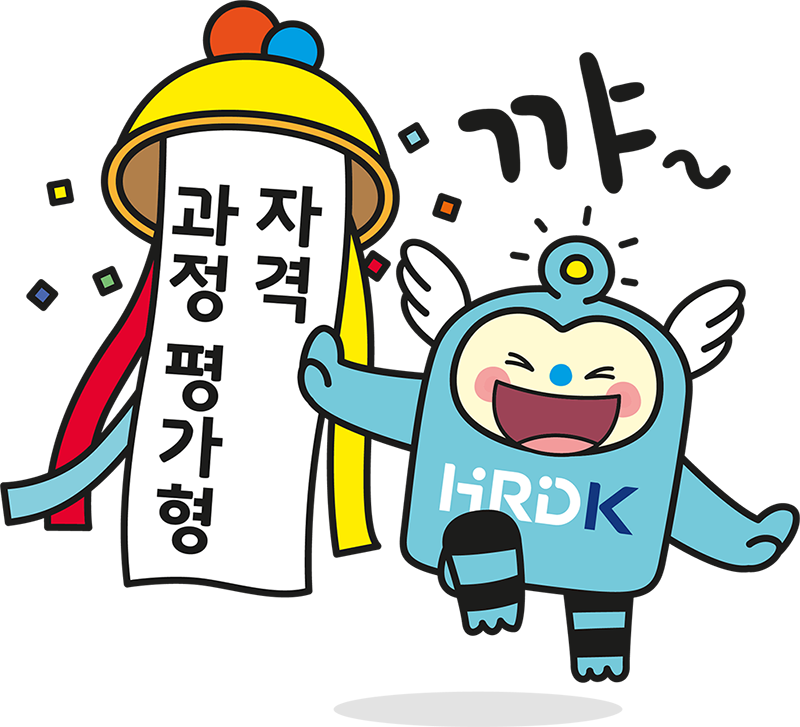
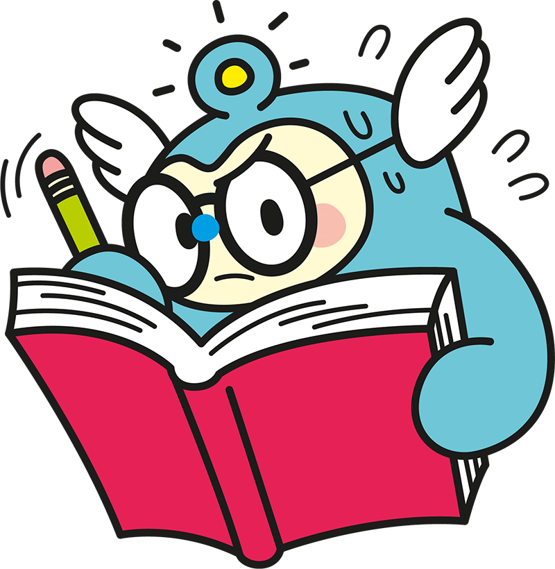
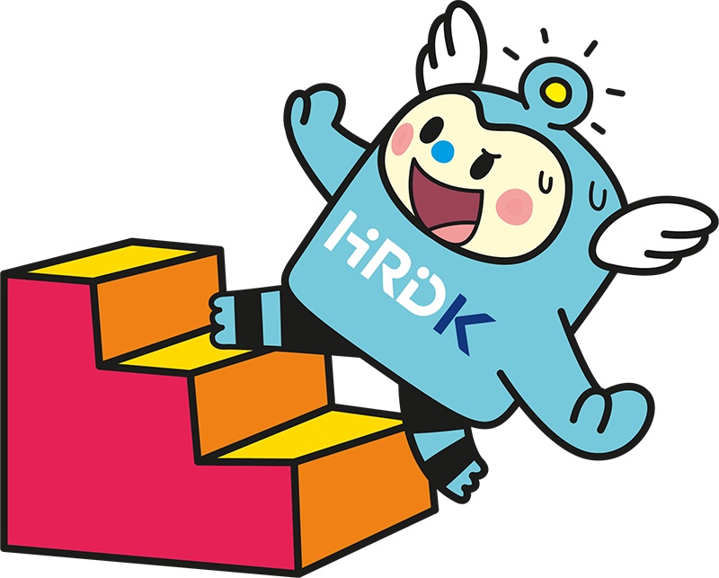

정하진
안녕하세요. 👩🎓
저는 전문대 2학년으로 재학 중인 정하진(가명)입니다!✌️
HRDK 과정평가운영부
안녕하세요. 한국산업인력공단 능력평가국 과정평가운영부입니다. 저희는 과정평가형 자격, 일학습병행 외부평가 계획·시행·관리 전반을 수행하고 있습니다. 수험자부터 직업훈련기관까지 다양한 외부고객을 대상으로 외부평가 일정 수립, 채점, 결과 통보 등 핵심 업무를 수행해 산업현장에서 요구하는 실무형 인재 양성을 지원하고 있습니다.
정하진
과정평가형 자격제도는 무엇인가요?💯
HRDK 과정평가운영부
산업현장의 ‘일’을 중심으로 직업교육훈련과 자격이 유기적으로 연계할 수 있는 방안 중 하나로, 국가직무능력표준(NCS)에 기반해 일정 요건을 갖춘 교육훈련과정을 충실히 이수한 자에게 내외부 평가를 실시하고, 정해진 합격기준을 충족한 경우 국가기술자격을 부여하는 제도입니다.

정하진
기존 자격제도와의 차이점은 무엇인가요? ✌️✒️
HRDK 과정평가운영부
검정형 자격은 정해진 응시요건을 충족한 사람만 응시할 수 있고, 지필·실기 시험에서 각각 60점 이상을 받아야 하며, 자격증에는 자격종목과 인적사항만 기재됩니다. 과정평가형 자격은 해당 과정을 이수한 누구나 응시할 수 있고, 내부·외부 평가를 1:1로 반영해 평균 80점 이상일 때 합격하며, 자격증에는 교육·훈련기관명, 이수기간·시간, NCS 능력단위명이 추가로 표기됩니다.
정하진
과정평가형 자격제도의 장점은 무엇이 있나요?⭐
HRDK 과정평가운영부
과정평가형 자격제도는 해당 교육·훈련과정을 성실히 이수할 수 있는 사람이라면, 학력·경력 등 별도 응시요건 없이 기능사·산업기사· 기사 등에 도전할 수 있는 제도입니다. 비용지원 훈련과정 참여 시 훈련비 지원을 받을 수 있고(조건별 상이), 공단 지정장소의 지필평가와 교육·훈련기관의 실무평가를 통해 교육·훈련과 자격 취득을 동시에 준비할 수 있습니다. 산업현장 요구를 반영한 NCS 기반 교육으로 현장 실무역량을 키우고, 이수한 능력단위가 기재된 자격증으로 경력개발에도 유리합니다.
정하진
과정평가형 자격 제도로 취득할 수 있는 자격종목은 무엇이 있나요?🔎
HRDK 과정평가운영부
과정평가형 자격은 현행 국가기술자격법령에 따른 국가기술자격 종목 가운데, 제도 정착 정도와 운영 여건, 성과 분석 등을 종합적으로 고려하여 순차적으로 시행 종목을 확대해 나가고 있습니다. 2025년 기준으로 과정평가형으로 운영 중인 대상 종목은 총 201개이며, 구체적인 종목별 세부 내용은 CQ-NET 홈페이지의 「과정평가형자격 안내 → 종목정보 → 과정평가형자격 시행종목」 메뉴 또는 하단에 제공된 자료에서 확인할 수 있습니다.

정하진
과정평가형 자격제도의 교육·훈련 과정에서 탈락한 사람은 검정형 자격시험에 응시할 수 있나요?📝
HRDK 과정평가운영부
과정평가형 자격 교육·훈련 과정에서 중도 탈락하더라도, 검정형 자격시험 응시는 가능합니다. 과정평가형 자격과 기존 검정형 자격은 자격을 취득하는 방식(과정 이수 vs 시험 응시)만 다를 뿐, 시험을 통해 자격을 취득한다는 점에서는 동일합니다. 따라서 과정평가형 교육·훈련 과정에서 중도에 그만두었거나 현재 참여 중인 경우라도, 검정형 자격의 응시 기준(산업기사·기사·기능장·기술사 등 법령상 학력 또는 경력 요건)에 해당한다면 언제든지 검정형 자격시험에 응시할 수 있습니다.
정하진
그렇다면 과정평가형 자격 제도에서 탈락한 사람은 재응시가 가능한가요?💦
HRDK 과정평가운영부
과정평가형 자격의 외부평가에서 불합격한 경우, 해당 결과 발생일로부터 2년 이내에는 재응시가 가능합니다. 다만, 응시 인원이 적어 시험장 개설이 어려운 등 사유로 인해 기존 교육·훈련기관에서 외부평가 응시가 불가능한 경우에는, 동일 능력단위를 교육·훈련했다는 전제를 충족하고, 타 교육·훈련기관의 시설·장비 활용이 가능한 등 제반 여건이 허락하는 범위에서 다른 기관에서 외부평가에 재응시하는 것도 허용됩니다.
정하진
이미 국가기술자격을 취득한 사람의 경우 과정평가형 자격제도 교육·훈련 과정에 참여할 수 있는지도 궁금합니다!🙋♀️
HRDK 과정평가운영부
이미 검정형 국가기술자격을 취득한 사람도 과정평가형 자격의 교육·훈련과정에 참여할 수 있습니다. 검정형 자격과 과정평가형 자격은 종목과 등급이 같더라도 자격 취득 방식과 자격증에 기재되는 내용이 서로 다르기 때문에, 추가로 과정평가형 자격을 취득하는 것이 가능합니다.